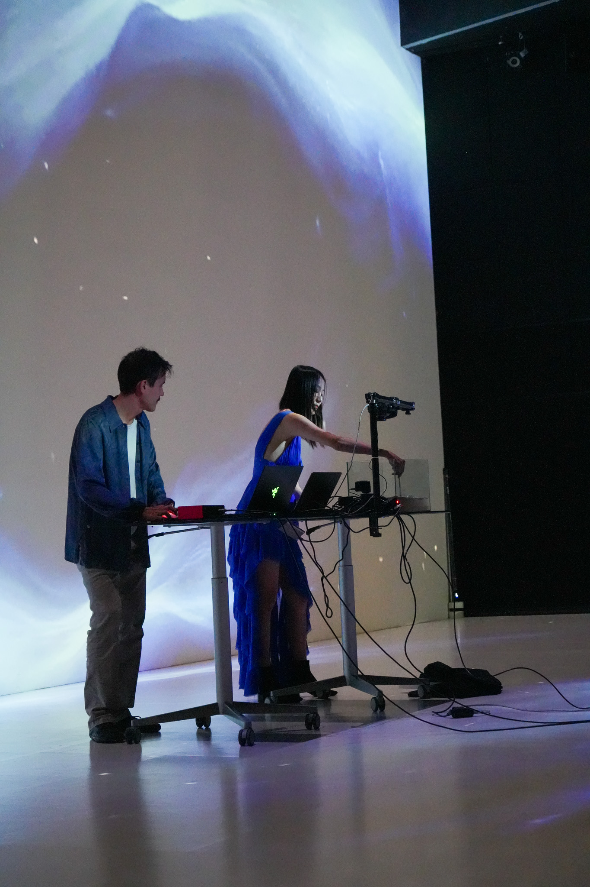

Gallery

.jpg)



Ars Electronica | 2025
The Long Fall is an immersive audiovisual journey tracing the delicate threads connecting microscopic plankton to planetary climate. Starting from the iconic White Cliffs of Dover—the largest visible monument of oceanic carbon capture—the audience plunges into a mesmerizing descent, experiencing the Earth's climate system through shifting scales.
This immersive journey places the audience within the vertical ocean column, embodying the perspective of plankton drifting endlessly downward. This new frame of reference underscores the overlooked significance of these microscopic organisms, which quietly regulate half of Earth's carbon cycle. Ignoring them in climate models results in an 80-gigaton discrepancy—nearly 10% of the global carbon budget.
At the center of the stage, a tank of bioluminescent dinoflagellates serves as a living instrument. A live camera feed captures their glowing responses to movement, merging with AI-generated reimaginings of planktonic worlds. Surrounding this, a “plankton instrument” with 64 responsive pads allows each touch to trigger the descent of a unique plankton species, accompanied by its own distinct sonic signature.
